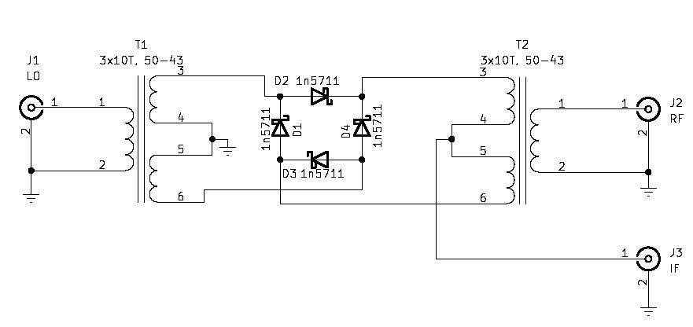
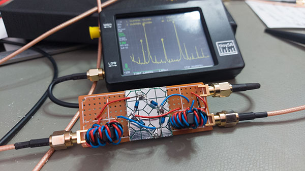

For both of these mixing products there is an insertion loss of between
4 and 5 dB, which is not great.
For both of these mixing products there is an insertion loss of between
4 and 5 dB, which is not great.I decided to build a diode ring (double) balanced mixer. The design of these is fairly straight forward:

I built it twice. The first time I wound the transformers on T50-6 cores and used 1n4148 diodes. This didn’t work very well. I concluded after a while that there were two issues working against it: First, the inductive reactance in parallel with the load would be low, loading down the generators. Second, a large drive level would be necessary to turn two 1n4148 diodes on at the same time.
The second time I wound the two transformers with 8 turns of trifilar wire on FT50-43 cores (I aimed for 10, but could only fit 8 turns of the insulated wire I used). I used 1n5711 Schottky diodes. These were my last 1n5711s, I need to order more, so matching these was not a possibility. The build is not beautiful:

I decided to make some measurement mixing 5 MHz to 9 MHz with a 14 MHz local oscillator. This would give 5 and 14 should give mixing products at 9 and 19 MHz. I used my HP signal generator to provide the 5 MHz RF and my Rigol function generator to provide the (sine) local oscillator. I tried a couple of different levels of RF and LO drive, and recorded the magnitudes of the two mixing products (and the RF and LO) on the IF port. All measurements were made with the Tiny SA at the IF port.
The main mixing products depend on the RF level, but not so much on the
drive levels that I’ve been looking at:
For both of these mixing products there is an insertion loss of between
4 and 5 dB, which is not great.
For the suppression of the RF input and the local oscillator,
we have:
 We see that there is 40 dB suppression of the RF input, and more than 50 dB
suppression of the local oscillator.
Given that performance with respect to the mixing products didn’t depend
a lot on the drive level, it seems unnecessary to run such a mixer at levels
higher than 4 dBm.
We see that there is 40 dB suppression of the RF input, and more than 50 dB
suppression of the local oscillator.
Given that performance with respect to the mixing products didn’t depend
a lot on the drive level, it seems unnecessary to run such a mixer at levels
higher than 4 dBm.